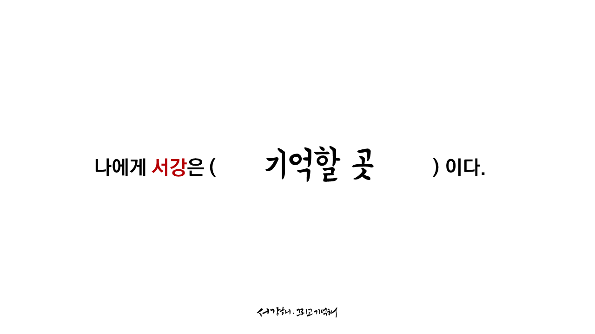
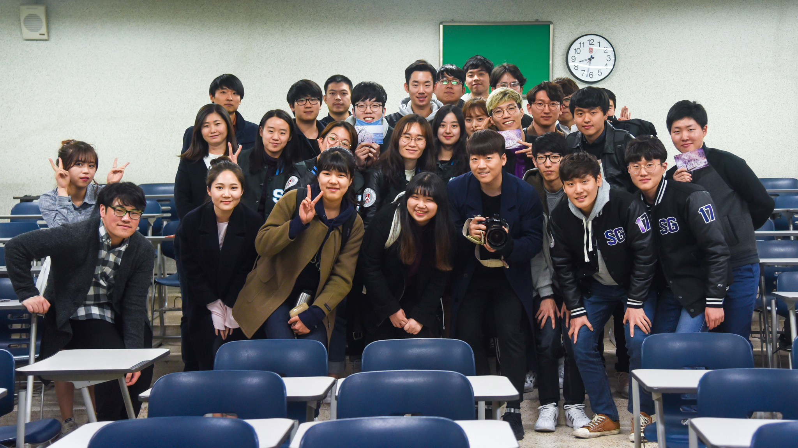
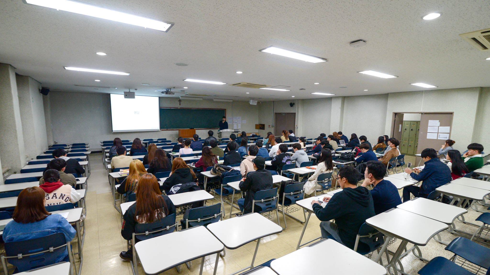

프로젝트와 관련된 최신 소식을 전해드리겠습니다.
May 25th
책갈피에 이은 <서강해 그리고 기억해> 의 또 하나의 공약,
게릴라 강연 2회 진행을 클리어하였습니다 :)
이번 강연과 지난 강연에 합쳐 100분 이상의 귀한 발걸음으로 더욱 뜻깊은 이야기를 함께 나눌 수 있었습니다.
여러분의 사진생활에 조금이나마 도움이 되었길 바랍니다. 많이 찍고, 많이 보정해보세요.
우리 앞에 펼쳐진 세상이 조금 더 예뻐보일거예요.
아직은 학생,
최근우 드림.
서강해 그리고 기억해,
후원 마감까지 6일 남았습니다 !!!
May 15th
#스티커
안녕하세요!
이번 업데이트는 서강해 그리고 기억해의 스티커 이미지입니다 :)
노트북, 가구, 수첩 등 어디에 붙여도 예쁜 스티커를 만들고 싶었고.. A4 크기의 크고 알찬 스티커 세트를 선물로 드리고 싶었습니다.
제가 시험삼아 노트북에 붙여봤는데요.. 저는 썩 괜찮았는데.. 여러분들의 마음에도 쏙 들었으면 좋겠습니다:)
프로젝트가 잘 완료되어 여러분께 소중한 선물을 전달해드릴 그날이 기다려집니다. 조금만 더 지켜봐주세요, 정말 고맙습니다 :)
May 11th
#책갈피선물 #모든후원자분께 ★
#후원기간연장 ★
안녕하세요 최근우입니다!
3월2일 개강일에 프로젝트를 공개한 후 두 달이 넘는 기간동안 정말 열심히 달려왔습니다. 그 결과 프로젝트의 사전 마감이었던 어제까지, 총 265명의 후원자분께서 1200만원의 금액을 후원해 주셨습니다. 이것은 사전 목표액의 120%를 채운 금액입니다. 대단히 고맙습니다!
모든 분들의 관심과 성원에 힘입어 1000만원 달성 공약이었던 <예쁜 책갈피>를 추가로 제작하였습니다. 그래서, 모든 후원자분들께 책갈피를 추가로 선물해드릴 수 있게 되었습니다. 책갈피는 한 종류가 아닌 총 네 종류로 만들었고, 여러분께 네 개의 책갈피를 모두 드리도록 하겠습니다:) ☞☜
그래서 이곳의 책갈피의 최종 이미지를 공개합니다!! 여러분의 후원이 있었기에 성공적인 제작이 가능했습니다. 정말 고맙습니다:)
엽서와 스티커의 이미지도 곧 공개하도록 하겠습니다 :) 두둥
그리고 또 한 가지 말씀드릴 것이 있습니다!
더 많은 분들께 프로젝트를 알리고 사진집을 선물해드릴 수 있도록, 후원의 최종 마감을 5월 31일 수요일로 연장하기로 결정했습니다! 1차 마감까지 함께해주신 모든 분들께 다시 한번 감사의 말씀을 드리며, 사진집의 제작이 완료되고 전시의 기획의 완성될때까지, 그래서 프로젝트가 성공적으로 완료될때까지 최선을 다하겠습니다. 150%, 200%의 달성을 위해 나아가겠습니다.
정말 고맙습니다!
May 8th
안녕하세요, <서강해 그리고 기억해>의 최근우입니다.
드디어, 프로젝트의 리워드 중 하나인 "엽서" 의 디자인이 완성되었습니다.
캘리그라퍼 이호원 (Howon Lee) (아텍13)의 도움을 받아 멋진 글과 사진으로 이루어진 다섯 장의 엽서가 탄생했습니다.
엽서는 학교 ACE(Advancement of College Education)사업의 홍보대사인 앨리스가 스승의 날을 맞이하여 진행하는, 교수님께 편지 쓰기 행사의 공식 엽서로 사용됩니다. 서강해 그리고 기억해의 엽서를 사용해주셔서 고맙습니다.
조만간 스티커와 책갈피의 디자인도 공개될 예정입니다. 가장 중요한 리워드인 사진집과 액자의 상세 정보는 추후 안내를 드리도록 하겠습니다 :)
내일은 우리에게 정말 중요한 날입니다.
함께 우리의 권리를 지킵시다.
그리고 이제 며칠 남지 않은,
프로젝트의 후원에도 많은 관심 부탁드립니다 :)
고맙습니다,
최근우 드림.
May 5th
D-5.
서강에 와서 사진이라는 꿈을 찾았고 서강에서 꿈을 연습했습니다. 그리고 지금, 학생으로서의 마지막 도전을 하며 꿈을 이어나가려 합니다. 그것은 서강에 의한, 서강을 위한, 서강의 사진집과 전시로 표현되는 비주얼스토리텔링 프로젝트 <서강해 그리고 기억해> 입니다. 입학의 순간부터 지금까지, 햇수로 8년이라는 길고도 짧은 시간동안 서강이 선물해준 수많은 풍경과 순간들을 담았습니다.
프로젝트를 위해 정말 오랜 기간 고민해왔습니다. 3월 초 프로젝트 최초 공개 후 지난 두 달간 가량 쉴 틈 없이 달려왔습니다. 페이스북 페이지 <서강해 그리고 기억해>와 페이스북 그룹 Sogang Univ. 에서 소통해왔고, 다양한 이벤트와 게릴라 사진 강연 등을 통해 프로젝트를 알려왔습니다.
그 결과 240명 이상의 재학생과 동문을 중심으로 총 1050만원 가량의 후원금을 모았습니다. 믿고 후원해주신 분들께 다시 한 번 감사드립니다.
시간이 많이 남지 않았습니다. 해야 할 것이 많이 남았고, 간직할 만한 사진집과 엽서, 스티커와 책갈피를 선물해드리기 위해 매일 고민하고 있습니다. 휴일이 찾아와서 다행입니다. 졸업을 하는 그 날까지 이 프로젝트에 모든 것을 바칠 계획입니다. 이것은 서강의, 서강에 의한, 서강을 위한 프로젝트 진행하고자 했던 저의 고집입니다. 제 고집에 동참해주시는 모든 분들께 진심어린 감사의 말씀을 드립니다.
여러분은 저의 자랑입니다. 그리고 서강대학교는 저의 가장 큰 자랑입니다.
약속드리겠습니다. 지켜 봐주시는 모든 분들에게, 지켜볼 만한 이야기의 완성으로 보답하겠습니다.
프로젝트 <서강해 그리고 기억해>를 기필코 성사시키겠습니다.
후원의 사전 마감까지 이제 며칠만 남았습니다.
저의 도전과 서강의 새로운 여정에 동참해주세요. 함께해주신 모든 분들의 존함을 사진집에 게재해 드리며, 응원해주신 한 분 한 분의 소중한 열정을 함께 기억하겠습니다.
대단히 고맙습니다.
D-5.
그동안 저는,
여러분들의 서강다움을 사진으로 훔쳐왔습니다.
혼자 간직하기엔 너무나 아름다웠던 서강.
이제 그 청년-서강을 돌려드리려 합니다.
우리 삶의 가장 푸른 나날들,
가장 자유롭고 가장 낭만적이었던.
< 서강해, 그리고 기억해 >
페이스북 페이지 : <서강해 그리고 기억해>
놀러오시고 팔로우도 해주세요, 좋은 컨텐츠로 매일 인사드리고 있습니다!
캘리그라피 이호원 (Howon Lee)
프로필사진 이형빈
April 27th
안녕하세요 <서강해 그리고 기억해>의 최근우입니다.
현재까지 총 190분께서, 850만원 가량을 후원해주셨습니다.
결코 쉽지 않아보였던 프로젝트가 여러분들의 도움으로 현실로 이루어지고 있습니다. 1000만원 달성 공약이었던, 모든 후원자분들께 <예쁜 책갈피>를 1매씩 드리겠다던 약속 또한 곧 지킬 수 있게 되었습니다.
서강의, 서강에 의한, 서강을 위한 프로젝트를 만들어내겠다는 고집 그대로 밀고 나가겠습니다. <서강해 그리고 기억해> 를 기필코 성사시키겠습니다. 조금 더 지켜봐주시고 응원해주시길 부탁드리겠습니다.
프로젝트 후원의 사전 마감은, 책자의 최종 견적이 결정되는 5월10일입니다. 간직할 만한 추억을 선물해드리기 위해 최선을 다 하고 있습니다. 조만간 프로젝트와 관련한 보다 상세한 이야기를 준비해 오겠습니다.
응원해주셔서, 후원해주셔서 다시 한 번 진심어린 감사의 말씀을 드립니다.
더 치열하게 서강하겠습니다.
좋은 오후 보내시기 바랍니다.
"그대 서강의 자랑이듯, 서강 그대의 자랑이어라."
- 최근우 드림
April 10th
March 30th, 2017
사진강연 <서강에서 찍어 봄> 이 마무리되었습니다.
발걸음해주신 모든 분들께 진심어린 감사의 말씀을 드립니다.
총 60분이 자리를 빛내주셨습니다.
두시간이라는 짧지 않은 시간동안 작은 이야기를 들어주셔서 정말 고맙습니다.
사전 질문에서 제가 여쭤본 질문이 있었습니다.
"나에게 서강은 __다."
제게 서강은 "기억할 곳" 입니다.
여러분이 적어준 서강을 한데 모아봤습니다.
우리가 생각하는 서강은 어떤 모습을 하고 있나요?
크라우드펀딩 프로젝트 <서강해 그리고 기억해> 에 많은 관심과 참여 부탁드립니다.
지켜봐주십시오.
도와주신 서강대학교 중앙사진동아리 서광회 고맙습니다.



March 20th, 2017
정말 고맙습니다,
2017년도 서강옛집 3-4월호에 프로젝트 "서강해 그리고 기억해" 가 소개되었습니다.
제목은 < 사진작가 꿈꾸며 졸업 전시회 준비하는 최근우(10사회) > 입니다.
한 쪽에 제가 하고 싶었던 말을 너무나 잘 담아주셨습니다. 지금 저는 250페이지 가량의 결코 작지 않은 사진집을 만들고 있습니다. 하고 싶은 말이 정말 많고, 보여드리고 싶은 사진이 정말 많습니다. 그리고 가장 중요한 것은, 서강이 우리에게 보여준 매력과 선물한 추억이 그만큼 방대하고 다양하다는 것입니다.
먼저 졸업하신 선배님들에게는 서강에서의 추억을, 지금 서강에서 지내고 있는 재학생 분들에게는 서강의 다양한 모습을, 앞으로 서강의 가족이 될 분들에게는 앞으로의 소중한 이야기를 선물하고 싶습니다. 어디에 붙여도 예쁜 서강대학교 스티커와, 간직할만한 엽서, 그리고 책갈피 등도 준비하고 있습니다. 전시와 행사 역시 준비하고 있습니다.
서강에서 만난 소중한 모든 분들께 직접 찾아뵙고 프로젝트에 대해 말씀드리고 싶었습니다. 그렇게 해야 마땅하나 후원을 부탁드리는 것은, 간곡히 말씀드리고 싶지만 그렇게 할 엄두가 나지 않는, 어려운 도전이었습니다. 하지만 약속드리겠습니다. 지켜봐주시는 모든 분들에게, 지켜볼 만한 이야기의 완성으로 보답하겠습니다.
후원의 목표액은 정말 큰 액수입니다. 결코 쉽지 않다는 것을 알고 있습니다. 하지만 불가능하지 않다는 것 또한 알고 있습니다. 이것은 서강의, 서강에 의한, 서강을 위한 프로젝트 진행하고자 했던 저의 고집입니다. 제 고집에 동참해주시는 모든 분들께 진심어린 감사의 말씀을 드립니다.
그동안 저는,
여러분들의 서강다움을 사진으로 훔쳐왔습니다.
혼자 간직하기엔 너무나 아름다웠던 서강.
이제 그 청년-서강을 돌려드리려 합니다.
우리 삶의 가장 푸른 나날들,
가장 자유롭고 가장 낭만적이었던.
< 서강해, 그리고 기억해 >
March 14th, 2017
안녕하세요!
벌써 3월 중순이네요..
날씨가 점점 따뜻해지는게 느껴지는 요즘입니다.
그동안 <서강해 그리고 기억해> 는,
자체 페이스북 페이지 " 서강해 그리고 기억해 " 와 Sogang Univ. 에서 화제의 전시 < 클림트 인사이드 > 와의 콜라보 이벤트를 진행했습니다.
또한, 2005년부터 서강인의 친구였던 카페, "커피브레이크" 의 추억을 기리는 작업물을 공유한 바 있습니다. 커피브레이크는 3월 14일 오늘을 마지막으로 영업을 마감합니다.
기억하고 나눌 것이 정말 많습니다.
정진하겠습니다.
페이스북 페이지 «서강해 그리고 기억해» 를 구독해주세요, 다양한 정보를 실시간으로 업데이트 해 드리겠습니다.
고맙습니다!
March 7th, 2017
꽃샘추위.
조금 있으면 거짓말같이 따뜻해질텐데, 겨울의 끝자락과 마지막 인사를 건네봅니다.
프로젝트가 공개된 지 벌써 한 주라는 시간이 흘렀습니다.
그간 서강 교정에서는 개강파티, 동아리 거리제 등 새 학기의 설렘을 온 몸으로 체감할 수 있었는데요, 수강신청 승인 및 정정을 위해 발로 뛰는 학생들의 모습도 종종 볼 수 있었습니다 (저도 그랬습니다).
새 학기의 학교가 예뻐 매일 기록을 하고 있는데, 서강은 매년 다른 모습으로 다가오는 것 같습니다.
프로젝트의 공개 후 페이스북 페이지 «서강해 그리고 기억해» 를 개설하여 소통하고 있습니다. 많은 관심 부탁드립니다.
현재까지 약 50분 가량 후원해주셨으며, 총 금액은 200만원을 초과했습니다. 정말 고맙습니다.
3월 6일에 첫 «다시 한번, 청년 서강»의 후원자가 나타나셨습니다. 정말 고맙습니다.
서강에서의 추억을 예쁘게 담아드리겠습니다.
수강신청이 마감된 만큼, 프로젝트의 홍보 박차를 가하고자 합니다.
대단히 고맙습니다.
- 서강해, 그리고 기억해 -
March 2nd, 2017
2017년도 새 학기가 밝았습니다.
«서강해 그리고 기억해»의 프로젝트가 마침내 공개되었습니다.
그동안 많은 분들의 도움으로 프로젝트의 준비가 가능했는데요,
우선 앞으로 많은 조언을 해주실 김상용 교수님께 감사드립니다.
총동문회 이창섭 사무국장님을 비롯한 동문회 관계자분들께 감사드립니다.
프로젝트를 응원해주시고 후원 채널의 공신력을 위해 (재)동문장학회 계좌를 허락해 주셨습니다.
«서강해 그리고 기억해»는 서강에서 시작해 서강에서 마무리 지어집니다.
이미 존재하는 우수한 크라우드펀딩 플랫폼이 아닌, 서강대학교 학생의 도움을 받아 사이트를 제작했습니다.
저의 고집에 동참해주셔서 대단히 미안하고 고맙습니다.
많은 응원과 관심 부탁드립니다.
끝까지 정진하겠습니다.
대단히 고맙습니다.
- 그대 서강의 자랑이듯, 서강 그대의 자랑이어라 -